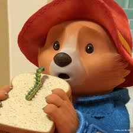

Che cos'è un Orso?
Il primo Paddington Bear venne creato per Gabrielle Designs nel 1972 da Shirley e Eddie Clarkson, pensato inizialmente come un regalo di Natale per i loro figli Joanna e Jeremy Clarkson. Shirley Clarkson fece calzare a Paddington degli stivali che gli consentissero di rimanere in posizione eretta. (Paddington ricevette gli stivali in regalo per Natale nel libro Paddington Marches On del 1964).